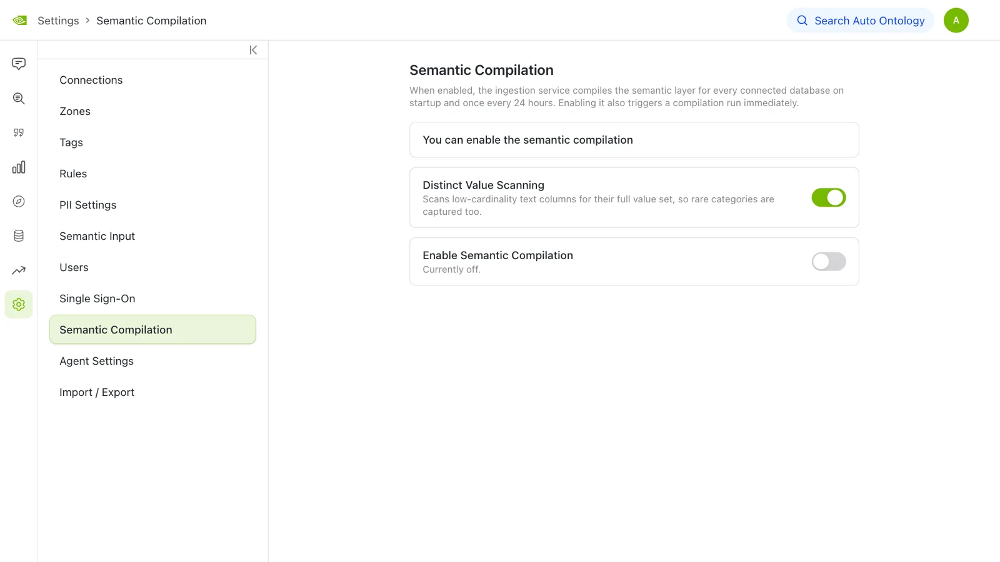
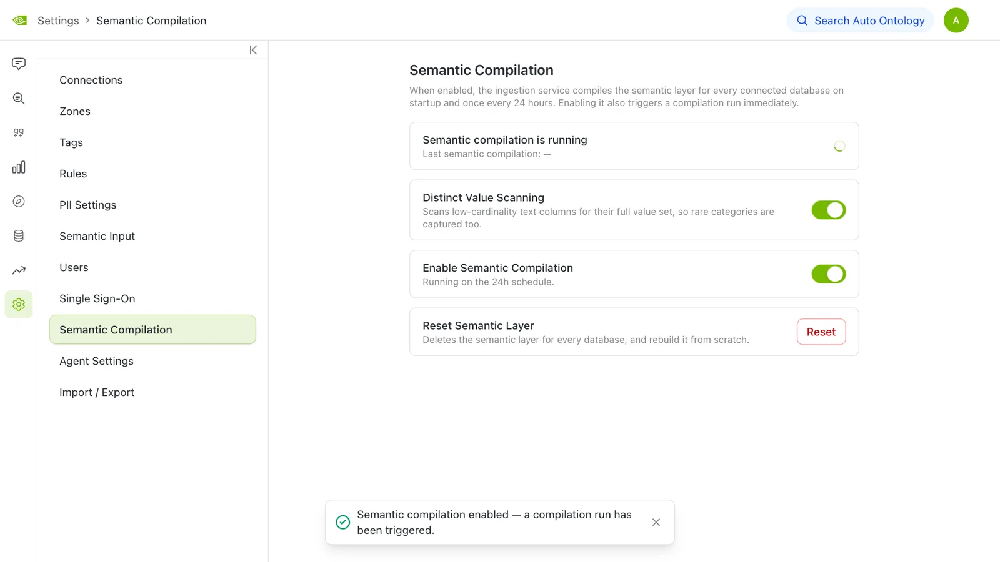
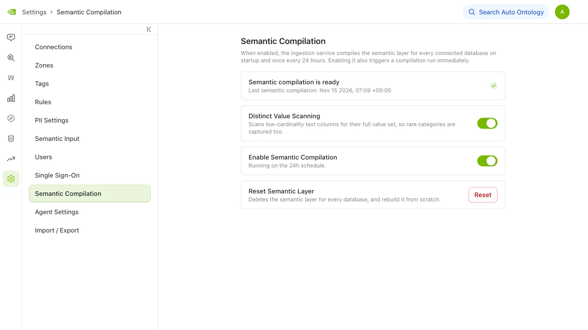
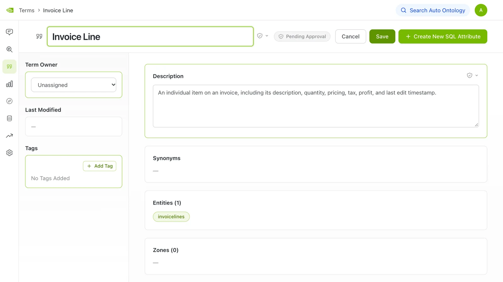

Settings → Semantic Compilation을 켜면 적재 서비스가 표 51개를 하나씩 읽어 업무 용어 51개를 만들고, 선언된 외래 키가 하나도 없는 WWI에서 조인 117개를 추론합니다. gpt-6.1-sol로 8분 6초(486초)가 걸렸습니다. 결과는 모두 「승인 대기」 초안입니다. 이 장에서는 무엇이 생겼는지 보고, 사람이 검토해야 할 부분을 짚습니다.
무엇을 · 왜#
2장에서 만든 카탈로그에는 표와 열 이름만 있습니다. 에이전트가 「펜실베이니아의 매출」을 SQL로 옮기려면 「매출은 송장 줄(invoicelines)의 금액」, 「주(州)는 고객 → 도시 → 주로 이어 찾는다」 같은 의미와 연결 경로를 알아야 합니다. 의미 계층 컴파일이 그 초안을 작성합니다. README가 적은 순서는 이렇습니다.
- 원천 읽기 — 스키마를 추출하고 열을 프로파일링한 뒤 값을 표본으로 모읍니다.
- 개체 이름 짓기 — 표마다 용어를 뽑고 열에 연결합니다.
- 관계 풀기 — 표 사이 조인과 다리 테이블을 추론하고, 질의 기록에서 SQL 속성을 제안합니다.
- 온톨로지 쓰기 — 용어·관계·SQL 속성을 Postgres에, 임베딩을 pgvector에 저장합니다.
따라 하기#
- 컴파일 화면을 엽니다. Settings → Semantic Compilation. 연결이 있으면 「You can enable the semantic compilation」이 보입니다. 바로 위의 Distinct Value Scanning은 기본으로 켜져 있습니다. 값의 종류가 적은 텍스트 열은 표본에 없던 드문 값까지 모두 훑어 둡니다. 「Pennsylvania」 같은 필터 값을 확인할 때 쓰입니다.

켜기 전의 Semantic Compilation — Distinct Value Scanning은 켜져 있음 - Enable Semantic Compilation을 켭니다. 켜는 순간 컴파일이 한 번 시작되고, 그 뒤로는 서비스가 시작될 때와 24시간마다 다시 실행됩니다. 상태 줄이 「Semantic compilation is running」으로 바뀝니다.

켠 직후 — 「Semantic compilation is running」 - 끝날 때까지 기다립니다. 이 교재의 실행에서는 8분 6초(적재 서비스 기록 486.1초)가 걸렸고, 끝나면 「Semantic compilation is ready」와 마지막 컴파일 시각이 뜹니다. 화면은 자동으로 갱신되지 않으므로 새로 고침해서 확인합니다.

컴파일 완료 — 「Semantic compilation is ready」
걸린 시간과 모델 호출#
적재 서비스 기록과 모델 중계기 기록을 맞춰 보면 이렇습니다.
| 구간 | 시간 | 한 일 |
|---|---|---|
| 표 51개 처리 | 약 3분 45초 | 표마다 열 값 표본 → 외래 키 후보 표시 → 용어·열 속성 추출 → 임베딩 |
| 조인 추론 | 약 4분 | 후보 열 145개(선언된 외래 키 0개)를 하나씩 대상 표와 맞춰 봄 |
| 다리 테이블 | 몇 초 | 「No eligible bridge tables found」 — WWI에는 해당 없음 |
| 합계 | 486.1초 | 모델 호출 318번, 모두 gpt-6.1-sol(추론 강도 기본값) |
같은 데이터를 11월 14일 gpt-4.1로 컴파일했을 때는 205.9초였습니다. 추론 모델은 단계마다 추론에 시간이 들어 두 배 넘게 걸렸습니다. 기본 모델인 NVIDIA Nemotron은 이 교재에서 측정하지 못했습니다.
무엇이 생겼나#
| 항목 | 개수 | 설명 |
|---|---|---|
| 용어(Term) | 51 | 표 51개마다 하나. 모두 Pending Approval(승인 대기) |
└ 그중 Archived … |
17 | _archive로 끝나는 보관용 사본 표의 용어 |
| └ 그중 뷰에서 온 중복 | 3 | Customer (wideworldimporters.website.customers)처럼 website 스키마 뷰가 따로 용어가 됨 |
| 조인(semantic FK) | 117 | 후보 122개 가운데 원천 열이 비어 있는 5개를 뺀 수 |
| └ 기본 조인 경로로 쓰는 것 | 103 | 한 표에서 같은 대상 표로 가는 열이 여럿이면 하나만 기본으로 고름 |
| SQL 속성 | 0 | README는 질의 기록에서 제안한다고 적었는데, 새 DB라 기록이 없음 |
조인의 예입니다. 앞의 다섯 줄이 README 예시 답의 SQL에서 사용하는 경로입니다.
| 원천 열 | → 대상 | 기본 경로 |
|---|---|---|
sales.invoicelines.invoiceid |
sales.invoices.invoiceid |
예 |
sales.invoicelines.stockitemid |
warehouse.stockitems.stockitemid |
예 |
sales.invoices.customerid |
sales.customers.customerid |
예 |
sales.customers.deliverycityid |
application.cities.cityid |
예 |
application.cities.stateprovinceid |
application.stateprovinces.stateprovinceid |
예 |
sales.customers.postalcityid |
application.cities.cityid |
아니오 — 배송 도시와 같은 대상이라 하나만 기본 |
warehouse.colors_archive.lasteditedby |
application.people.personid |
예 — 원천에 없는 조인 |
조인을 채점해 보면#
11월 14일 비교 때 원천 스키마 문서로 만든 정답 조인 98개(업무 키 69개 + 「마지막으로 고친 사람」 열 29개)로 채점했습니다.
| 기본 조인 경로 기준 | 이번(gpt-6.1-sol) | 11-14(gpt-4.1) |
|---|---|---|
| 업무 키 — 맞은 비율 | 75.8% (66개 중) | 82.5% (57개 중) |
| 업무 키 — 찾은 비율 | 72.5% (69개 중 50) | 68.1% (69개 중 47) |
감사 열(lasteditedby) 조인 |
37개, 그중 13개는 원천에 없음 | 20개, 그중 13개는 원천에 없음 |
모델에 따라 조인이 달라집니다. 같은 원천이라도 컴파일할 때마다 다를 수 있다는 뜻입니다.
검토: 어디를 보아야 하나#
README는 두 번째 단계를 사람이 하는 일로 둡니다. "Test with real questions in Chat … Refine terms, descriptions, and SQL attributes … Certify names, descriptions, and SQL attributes once they're correct." 이번 초안에서 먼저 검토할 부분은 세 군데입니다.
- 보관용 사본 표.
Archived …용어 17개와 그 조인은 현재 데이터에 대한 질문에 영향을 줄 수 있습니다. 11월 14일 실행에서 Q1이 틀린 까닭 가운데 하나가 이 표들을 거친 조인이었습니다. 연결의 Table Denylist에_archive$를 넣고 Settings → Semantic Compilation → Reset Semantic Layer 후 다시 컴파일하면 처음부터 빠집니다(이 교재에서는 공식 예제와 같게 두었고, 이 방법으로 다시 돌려 보지는 않았습니다). - 「마지막으로 고친 사람」 조인. WWI의 거의 모든 표에 있는
lasteditedby → people.personid가 기본 조인 경로에 37개 들어갔습니다. 1.2.0의 화면과 공개 API에서는 조인 하나를 끄는 방법을 찾지 못했습니다. 질문에서 「누가 고쳤나」를 묻지 않는 한 쓰이지 않지만, 경로를 고를 때 잘못된 경로로 이어질 수 있습니다. - 지표의 정의. 「매출」이 세금을 포함한
extendedprice인지, 세금을 뺀 값인지는 데이터만 보고 정할 수 없습니다. 지금은 SQL 속성이 0개라 모델이 질문마다 정의를 선택합니다. 5장에서 이 차이가 실제로 답을 바꾸는 것을 보고, 끝에서 SQL 속성을 하나 만들어 인증해 봅니다.
용어를 고치고 인증하는 곳은 용어 상세 화면입니다. Edit을 누르면 이름·설명을 고칠 수 있고, 이름과 설명 옆의 방패 모양 단추에서 인증 상태를 바꿉니다. 용어 화면은 4장에서 둘러봅니다.

막히면#
막히면
- 컴파일이 몇 분째 「running」에서 안 바뀜 — 화면은 자동으로 새로 고쳐지지 않고, 추론 모델은 오래 걸립니다(이 교재 8분 6초). → 새로 고침해서 확인하고, 진행 상황은 적재 서비스 로그의
[n/51] Processing table·Resolving semantic FK edges… (n/145)줄에서 확인합니다. - 「Please connect any data source」만 보임 — 연결이 없거나 적재가 끝나지 않았습니다. → 2장의 연결을 먼저 만듭니다.
- 조인 하나를 끄고 싶음 — 1.2.0 화면·공개 API에는 그 기능이 없습니다. → 표 자체를 빼려면 연결의 Table Denylist + Reset Semantic Layer + 다시 컴파일합니다.
확인 문제#
1. WWI에는 선언된 외래 키가 하나도 없는데 조인은 어떻게 생겼나요?
컴파일이 열마다 「다른 표를 가리키는 키인가」를 모델로 판단하고, 임베딩으로 대상 후보를 찾은 뒤 표본 값이 실제로 대상 표에 있는지 확인해 추론했습니다. 기록의 0 declared + 122 inferred가 그 결과입니다.
2. 컴파일이 끝난 용어가 모두 「Pending Approval」인 까닭은 무엇이고, 다음에 할 일은 무엇인가요?
자동으로 만든 초안이라 아직 아무도 확인하지 않았기 때문입니다. 실제 질문으로 시험하고, 설명과 SQL 속성을 고친 뒤, 맞는 것을 인증합니다.
다음 장에서는 만들어진 용어와 그래프를 화면에서 둘러봅니다.